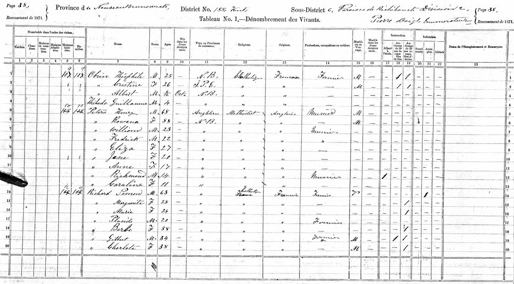
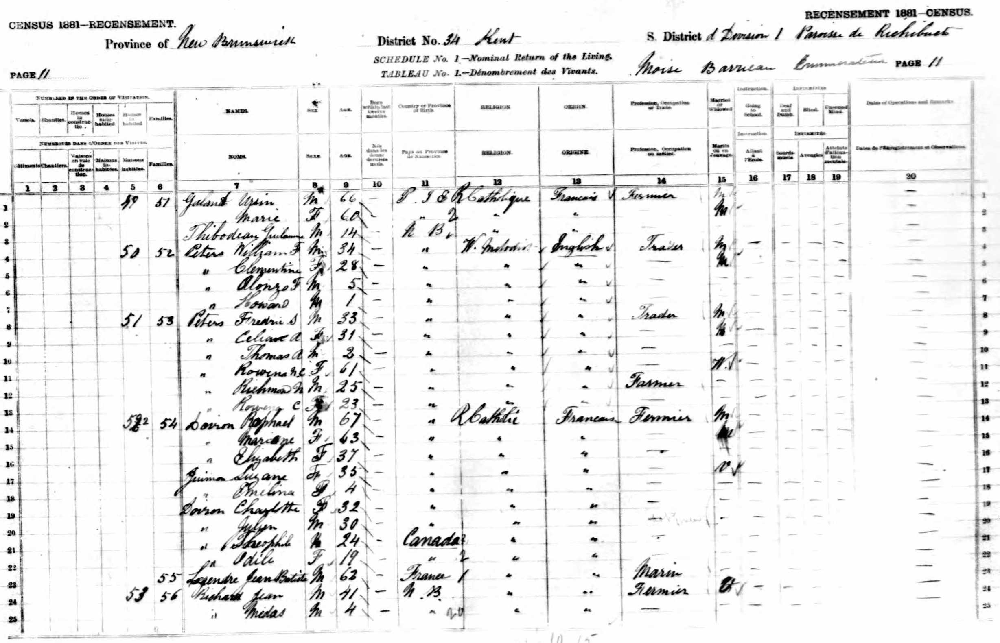

Capt Albert Goodrich Peters 1865 - 1926
[ Home ] | [ Calendar ] | [ Surnames Index ] | [ Errors ] | [ Family History ]A senior boat pilot and the 3rd of 4 children of Henry Peters and Elizabeth Cook, Albert Peters, the third cousin twice-removed on the father's side of Nigel Horne, was born in New Brunswick, Canada on 4 Nov 18651,2,3,4,5,6,7,8,9 and married Mary Hogan (with whom he had 2 children: Albert Ernest and Margaret Celena, along with 1 surviving child) in New Westminster, British Columbia, Canada on 12 Sept 189610.
During his life, he was living in Richibucto, Kent, New Brunswick in 18711 and in 18812; in New Westminster on 22 Apr 18913 (the same place as his parents were living in 1891), in 19014 and in 19115; and at 511 Ninth Street, British Columbia on 1 Jun 19216.
He died on 4 Feb 1926 in New Westminster7,8 and was buried there at Fraser Cemetery after 4 Feb 19268.
Parents
- Henry Watson was born on 3 May 1839
- Elizabeth A was born in 1844
Children
- Albert Ernest was born on 26 Dec 1902
Citations
- 1871 Census of Canada Ancestry.com Operations Inc
- 1881 Census of Canada Ancestry.com Operations Inc
- 1891 Census of Canada Ancestry.com Operations Inc (Marital Status: Single; Relation to Head of House: Son)
- 1901 Census of Canada Ancestry.com Operations Inc (Marital Status: Married; Relation to Head of House: Head)
- 1911 Census of Canada Online publication - Provo, UT, USA: Ancestry.com Operations Inc, 2006. .Original data - Library and Archives Canada. Census of Canada, 1911. Ottawa, Ontario, Canada: Library and Archives Canada, 2007. http://www.collectionscanada.gc.ca/databases/census-19 (Marital Status: Married; Relation to Head of House: Head)
- 1921 Census of Canada Ancestry.com Operations Inc (Marital Status: Married; Relation to Head of House: Head)
- British Columbia, Canada, Death Index, 1872-1990 Ancestry.com Operations Inc
- Canada, Find A Grave Index, 1600s-Current Ancestry.com Operations, Inc.
- Kent County, New Brunswick Census, 1871: Eight Subdistricts Ancestry.com Operations Inc
- British Columbia, Canada, Marriage Index, 1872-1935 Ancestry.com Operations Inc
- Canada Census 1911 - Findmypast (was the head of the household)
Media
Albert Goodrich Peters - headstone

1871 Canada Census

1881 Canada Census

1901 Canada Census

1911 Canada Census

1921 Canada Census

Family Tree

Map
Generated by ged2site. Last updated on Jul 3, 2024
Known Issues
May have been living with mother on 1871, but the addresses don't match or aren't detailed enough to be sure
May have been living with father on 1871, but the addresses don't match or aren't detailed enough to be sure
1881: Not living with either parent in childhood when aged 15
Adding date of burial as 'aft 4 Feb 1926'